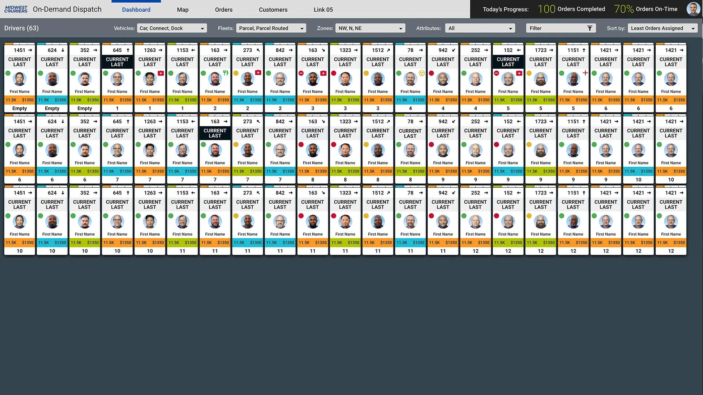

Lesson 2 of 12 · 3 min read
What is UX for when agents build the software?
Three things a factory can’t do for itself: decide what’s worth building, judge whether what it built works for people, and supply the context it builds from. An AI pipeline can plan, build, test, and ship without anyone asking a user, and it will report that everything is fine.

A factory can build the wrong thing perfectly
Tanner Kohler at Nielsen Norman Group read the published playbooks for building software with agents, and found UX reduced to context: guidelines the agents read, then a process that runs without a designer in it.
 PlanAn intent, approved by the product owner
PlanAn intent, approved by the product owner DesignA spec and a mockup
DesignA spec and a mockup BuildA plan, approved by an engineer
BuildA plan, approved by an engineer TestScreenshots against the mockup, not people
TestScreenshots against the mockup, not people DeployCode review, then a technical lead
DeployCode review, then a technical lead MaintainTechnical health, not whether people finish
MaintainTechnical health, not whether people finish
No stage asks a user anything. His example is a feature people abandon because its labels confuse them, while the monitoring shows no distress at all.
A perfect build of the wrong thing is still the wrong thing.
Deciding what’s worth building comes before the first file
On the dispatch floor at Midwest Couriers, I was sure the new tool needed a map. A morning of watching ended that: the dispatchers knew every location code by heart. The full story is in the dispatch case study.

A factory would have built my map in an afternoon, passed every test, and shipped it. Speed only delivers a wrong assumption sooner.
The cheaper building gets, the more the decision about what to build is worth.
Judging what got built still takes people
I use agents in testing, and they’re good at it. They walk the paths I script on every build and flag dead ends before anyone sits down. What they can’t give me is what a person expected to happen.
The factory
- Every path, on every build
- Dead ends, broken states, contrast
- Whether it matches the mockup
A person
- What they thought would happen
- Where they hesitated, and why
- Whether they finished at all
Kohler’s fixes are practical. Write the intent around a user’s need. Help set acceptance criteria people can fail. Name the changes a UX person must review. Put task abandonment and support tickets into the monitoring.
The third job, supplying context, is the one the playbooks already give us. I think it’s the least of the three, and the next lesson is about doing it well.
A factory can tell you the build passed. Only people can tell you it worked.
Check yourself
Where in your process would a user’s confusion first show up?
If the answer is a support ticket after launch, the pipeline has no stage that looks for it. That’s the stage to add.
Who writes the acceptance criteria, and could a real person fail them?
Criteria that only a screenshot can fail measure the build. Criteria a person can fail measure the product.
The idea: Tanner Kohler, Nielsen Norman Group, The Role of UX in Agentic Software Factories, shared by Tanner Christensen. The example: the dispatch case study and how I test, on this site.